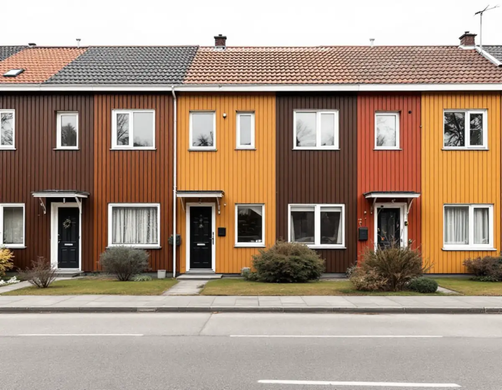
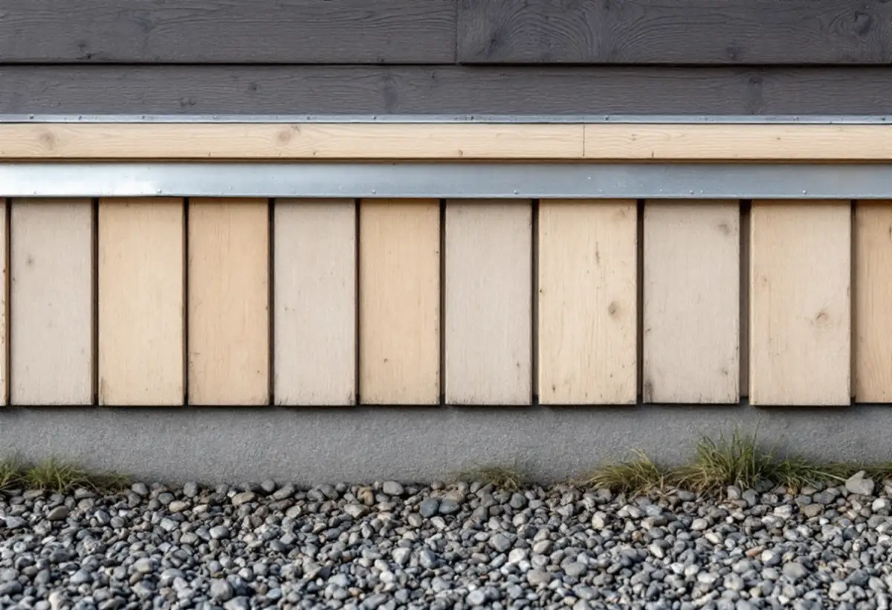
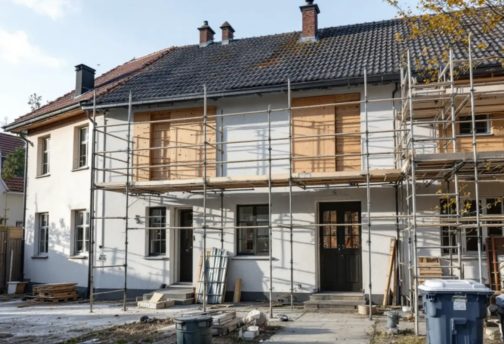

Besök
Gratis besök där vi går runt huset och kontrollerar panel och anslutningar.
Kistas småhus byggdes 1975–1980 och har nu stått i snart 50 år. Oavsett om fasaden är av trä, skivor eller tegel har den fått sin beskärda del av väder och vind. En fasadrenovering i Kista kan vara allt från att byta enstaka brädor till ny panel och tilläggsisolering – och i radhus som ägs av en förening är det ofta styrelsen som bestämmer.

När Kista byggdes ut 1975–1980 tillämpade staden enligt Stadsmuseet betydligt friare former för arkitekturen än i de andra stadsdelarna på Järvafältet. Bebyggelsen fick 2 500 lägenheter i flerbostadshus och omkring 780 småhus.
Stadens statistik för 2024 visar 971 småhus i Kista. 482 ägs med äganderätt och 404 är bostadsrätter. För en fasadrenovering betyder det att ungefär hälften av radhusägarna beställer själva, medan resten har en förening som kan ansvara för fasaden.

På en träfasad är det nederkanten som drabbas först: brädorna närmast marken och ovanför fönster och dörrar där vattnet rinner av. Där börjar rötan, och där släpper färgen först.
Vi går runt huset och känner på panelen med en syl, tittar på fönsterbleck och anslutningar och kontrollerar att luftspalten bakom panelen är öppen nedtill. Är skadorna begränsade räcker det att byta de brädor som är dåliga och måla om.
Boverket skriver att asbest förbjöds inom byggsektorn 1982. Hus byggda före dess kan alltså innehålla asbesthaltiga material, till exempel i vissa fasadskivor. Så länge materialet sitter fast och inte bearbetas är det ingen fara, men när det sågas, borras eller rivs kan fibrer frigöras.
Kistas småhus är byggda just innan förbudet. Innan vi river skivor eller annat material som kan vara från byggtiden tar vi reda på vad det är, och vid tvekan tas prov. Arbetsmiljöverket har regler för hur asbest ska hanteras när det rivs.
Staden räknar tilläggsisolering som en fasadändring, liksom byte av kulör eller material på fasaden. På ett en- eller tvåbostadshus krävs inte längre bygglov för fasadändringar om vissa förutsättningar är uppfyllda, men ändringen ska stämma med detaljplanen och göras varsamt.
Tilläggsisolering gör väggen tjockare. Fönster, dörrar, takfot och fönsterbleck måste anpassas, och i ett radhus påverkas även anslutningen mot grannens fasad. Vi visar hur det löses innan något beställs.
I ett radhusområde där husen är bostadsrätter avgör stadgarna vem som ansvarar för fasaden. Ofta är det föreningen, och då görs fasaderna längs en hel länga eller ett helt område samtidigt.
Styrelsen får ett skriftligt kostnadsförslag efter ett gratis besök, med foton av skadorna och vad som bör göras nu och vad som kan vänta. Läs mer om fasadrenovering.
Radhus byggs i grupper där husen hör ihop. Byter ett hus kulör eller material syns det längs hela längan. På ett en- eller tvåbostadshus krävs i regel inte bygglov för att måla om i en ny kulör, men ändringen ska enligt Boverket anpassas till omgivningen och göras varsamt.
Vi föreslår därför att grannarna stäms av innan en ny kulör väljs, och att samma kulörkod används om flera hus renoveras vid olika tillfällen. Kulören skrivs in i kostnadsförslaget, så att den kan användas igen nästa gång.

Gratis besök där vi går runt huset och kontrollerar panel och anslutningar.
Vi tar reda på vad fasaden består av och tar prov vid tvekan.
Skriftligt kostnadsförslag med foton och prioriteringar.
Ställning och skydd för trädgård och grannar.
Byte av panel, isolering, bleck och anslutningar.
Grundmålning och färdigmålning i vald kulör.
Äger du ett småhus ger arbetet rotavdrag när du bor i huset eller har det som fritidshus. Avdraget är 30 procent av arbetskostnaden, högst 50 000 kronor per person och år och högst 75 000 kronor tillsammans med rutavdrag, enligt Skatteverket. Material och resor ger inget avdrag. Geal drar avdraget direkt på fakturan.
Ansvarar en bostadsrättsförening för fasaden ger arbetet inget rotavdrag för medlemmarna.
Fasadens yta och material, hur mycket som behöver bytas, om fasaden ska tilläggsisoleras, om gamla material måste hanteras särskilt och om flera hus görs samtidigt. Du får ett skriftligt kostnadsförslag.
Puts, panel och tilläggsisolering.
Fasadrenovering i Stockholm →Takbyte, takbesiktning och plåtarbeten.
Takläggare i Kista →Låga tak, tätskikt och takbrunnar från 1970-talet.
Takrenovering i Kista →Gårdshus vid radhus och villor.
Attefallshus i Kista →Radhusen, föreningen och ventilationen.
Badrumsrenovering i Kista →Uterum, altan och föreningens tillstånd.
Byggföretag i Kista →Radhus, atriumhus och husgruppen.
Fasadmålning i Kista →Radhus och villor från 1970-talet.
Fönsterbyte i Kista →1970-talets radhusfönster.
Fönsterrenovering i Kista →Nya golv på betong i radhus och lägenheter.
Golvläggare i Kista →Golvslipning i bostadsrätt, hyresrätt och radhus.
Golvslipning i Kista →Småhus i förening och kök från 1970-talet.
Köksrenovering i Kista →1970-talets hus, asbest och ROT.
Målare i Kista →Rännor, stuprör och beslag.
Plåtslagare i Kista →Garderober, väggar och dörrar i lägenheten.
Snickare i Kista →Platta tak och pulpettak.
Takbyte i Kista →Lägenheter och radhus från 1970-talet.
Tapetsering i Kista →Tillbyggnad vid radhus och villor.
Tillbyggnad i Kista →Renovera hela huset eller lägenheten.
Totalrenovering i Kista →